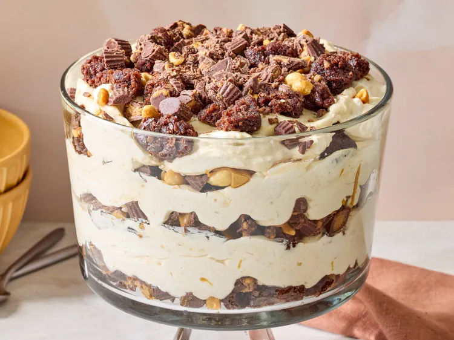

Home
Heaven in a Bowl

Description
Heaven in a Bowl lives up to its name with layers of fudgy brownies, fluffy peanut butter pudding, chopped Reese’s peanut butter cups, and crunchy peanuts. This rich, sweet-and-salty trifle is easy to make ahead and serves a crowd, making it a showstopping dessert for parties and gatherings.
Ingredients
- 16.3 Ounce Box Brownie Mix
- 1/2 Cup Vegetable Oil
- 1/4 Cup Water
- 2 Large Eggs
- 3 Cups Milk
- 1 & 1/2 Cups Creamy Peanut Butter
- 5.1 Ounce Package Vanilla Instant Pudding
- 8 Ounce Package Cream Cheese
- 2 Tablespoons Powdered Sugar
- 2 Teaspoons Powdered Sugar
- 2 Teaspoons Vanilla Extract
- 3 Cups Heavy Cream
- 4 & 1/2 Cups Peanut Butter Cups
- 1 Cup Roasted Peanuts
Steps
- Combine brownie mix, vegetable oil, water, and eggs in a large bowl. Mix with a wooden spoon until well blended. Spread into the prepared baking pan. Bake in the preheated oven until a toothpick inserted 2 inches from the side of the pan comes out clean, 28 to 30 minutes. Allow to cool, then cut into bite-sized pieces.
- Meanwhile, whisk together milk, 1 cup peanut butter, and pudding mix in a large bowl until smooth and thickened. Set aside.
- Beat cream cheese, powdered sugar, and vanilla extract in the bowl of a stand mixer fitted with the whisk attachment until smooth. Gradually add heavy cream, scraping down the sides of the bowl as needed. Beat until stiff peaks form.
- Fold cream cheese mixture into the pudding mixture until combined.
- Place remaining 1/2 cup peanut butter in a small microwave-safe bowl and heat in the microwave for 30 seconds or until melted; set aside.
- Layer 2 cups brownie pieces, about 1 1/3 cups chopped peanut butter cups, and 1/4 cup peanuts in the bottom of a 4-quart trifle dish. Drizzle with about 2 tablespoons melted peanut butter. Spread about 3 cups peanut butter filling over the top. Repeat the layers two more times.
- Top with the remaining brownie pieces, peanut butter cups, and peanuts. Cover and refrigerate for at least 2 hours or up to overnight before serving.